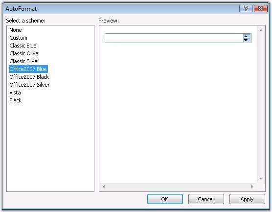

This section discusses the features of the DateTimeTextBox control. It includes the following topics:
Null Date and Value Settings
The control can be enabled to accept null / empty values by setting the EnableNullDate property.
Assigning some text to the NullString property, displays that string, when no date is selected.
To display some text in the control by default, instead of displaying the current date, IsNullDate can be enabled and the text to be displayed has to be set to NullString property. If no text is set, then no value will be displayed, in the control, initially.
Figure 44: IsNullDate set with NullString and without setting NullString
By setting EnableNullKeys, when BACKSPACE or DELETE key is pressed, null value or text string can be displayed, when the focus is on the control.
|
Property |
Description |
|
EnableNullDate |
Gets / sets the boolean value whether to enable null value. Default value is False. |
|
EnableNullKeys |
Gets / sets the boolean value whether to reset the date to null when BACKSPACE or DELETE keys are used. Default value is False. |
|
IsNullDate |
Gets / sets the boolean value to indicate if no date is selected. Default value is False. |
|
NullString |
Specifies the text to display when no date is selected. |
Programmatically the null dates can be set as follows.
|
[C#]
DateTimeTextBox1.EnableNullDate = true; DateTimeTextBox1.EnableNullKeys = true; DateTimeTextBox1.NullString = "Select a date - not optional"; DateTimeTextBox1.IsNullDate = true; |
|
[VB]
Private DateTimeTextBox1.EnableNullDate = True Private DateTimeTextBox1.EnableNullKeys = True Private DateTimeTextBox1.NullString = "Select a date - not optional" Private DateTimeTextBox1.IsNullDate = True |
Setting Start and End dates
The start and end dates can be specified, such that values can be selected only between those dates by setting the MaxVaue and the MinValue properties. The default MaxValue is 12/31/2099 and the default MinValue is 1/1/1900.
|
Property |
Description |
|
MaxValue |
Specifies maximum value the DateTimeTextBox allows. |
|
MinValue |
Specifies minimum value the DateTimeTextBox allows. |
Programmatically the min and max values can be set as follows.
|
[C#]
DateTimeTextBox1.MaxValue = new DateTime(2007, 12, 1); DateTimeTextBox1.MinValue = new DateTime(2007, 1, 1); |
|
[VB]
Private DateTimeTextBox1.MaxValue = New DateTime(2007, 12, 1) Private DateTimeTextBox1.MinValue = New DateTime(2007, 1, 1) |
Figure 45: Range set with Error fore and back color
Indicating error values
Back and fore colors can be applied to indicate the error values, i.e., values beyond the min and max values, by setting the ErrorBackColor and ErrorForeColor properties.
|
Property |
Description |
|
ErrorBackColor |
Specifies the back color to use to indicate the date or time is not valid. |
|
ErrorForeColor |
Specifies the fore color to use to indicate that the input is not valid. |
Programmatically the error value colors can be set as follows.
|
[C#]
DateTimeTextBox1.ErrorBackColor = System.Drawing.Color.BlanchedAlmond; DateTimeTextBox1.ErrorForeColor = System.Drawing.Color.CadetBlue; |
|
[VB]
Private DateTimeTextBox1.ErrorBackColor = System.Drawing.Color.BlanchedAlmond Private DateTimeTextBox1.ErrorForeColor = System.Drawing.Color.CadetBlue |
When SpaceSymbol is set, the unoccupied spaces for the date, day, month, year and time will be replaced with that symbol. By default, the value is a single white space.
Figure 46: Date time values with different SpaceSymbol settings
|
Property |
Description |
|
SpaceSymbol |
Specifies the symbol to use for filling the extra spaces of date time value. |
Programmatically the space symbol can be set as follows.
|
[C#]
DateTimeTextBox1.SpaceSymbol = '*'; |
|
[VB]
Private DateTimeTextBox1.SpaceSymbol = "*"c |
RightToLeft property
You can align the elements of the DateTimeTextBox by using this property.
|
Property |
Description |
|
RightToLeft |
Gets / sets a value indicating whether the elements of the control are aligned to support locales using right-to-left fonts. |
|
[C#]
DateTimeBox1.RightToLeft = true; |
|
[VB]
Private DateTimeTextBox1.RightToLeft = True |
Figure 47: Elements of the DateTimeTextBox is Aligned to Right
The control offers various pre-defined formats, in which the date-time values can be displayed, by setting the required option to the Format property.
|
Property |
Description |
|
Format |
Represents the date-time format of the control. The options included are as follows: · Long · Short · Time · CustomChar · CustomString |
When Format property is set to CustomChar, the values set for the CustomFormatChar property will be inherited and the date-time will be displayed in that format.
|
Property |
Description |
|
CustomFormatChar |
Specifies the date-time format type. The various values that can be set are 'D, F, G, M, R, S and Y'. |
The various valid values for CustomFormatChar are listed in the below table.
|
CustomFormatChar Option |
Format |
|
d |
01/20/2007 |
|
D |
Monday, 01 January 2007 |
|
g/G |
01/01/2007 00:00 |
|
f |
Monday, 01 January 2007 00:00 |
|
F/U |
Monday, 01 January 2007 00:00:00 |
|
m/M |
January 01 |
|
t |
00.00 |
|
T |
09:00:00 |
|
u |
2007-01-01 09:00:00z |
|
y/Y |
2007 January |
|
r/R |
Mon, 01 Jan 2007 09:00:00 GMT |
|
s |
2007-01-01 T09:00:00 |
Programmatically the formats can be set as follows.
|
[C#]
DateTimeTextBox1.Format = DateTimeFormatType.CustomChar; DateTimeTextBox1.CustomFormatChar = 'M'; |
|
[VB]
Private DateTimeTextBox1.Format = DateTimeFormatType.CustomChar Private DateTimeTextBox1.CustomFormatChar = "M"c |
When Format is set to CustomString option, the control displays the value in the format obtained from the CustomFormat property.
|
Property |
Description |
|
CustomFormat |
Specifies the date format when Format property is set to CustomString. For example: dd/mm/yyyy hh:mm:ss. |
The combination of these values can be set to display the value in the required format. The various valid entries are listed in the below table.
|
CustomFormat Option |
Description |
|
ffffff |
The fraction of a second in six-digit precision. The remaining digits are truncated. The number of f's can be specified from 1 to 6, where those many digits will be displayed thereby truncating the remaining digits. |
|
hh:mm:ss:ff |
The hour in a 12-hour clock. Single-digit hours/min/sec/fraction of a second, will have a leading zero. |
|
HH:mm:ss:ff |
The hour in a 24-hour clock. Single-digit hours/min/sec/fraction of a second, will have a leading zero. |
|
h(or)H:m:s:f |
Single-digit hours (12-hour clock -or- 24-hour clock)/min/sec/fraction of a second will not have a leading zero. |
|
MMMM/dddd/yyyy |
The full name of the month/day/year will be displayed. |
|
ddd/MMM |
The abbreviated name of the day/month will be displayed. |
|
dd/yy/MM |
The first two letters of the day and month will be displayed. Year will be displayed without the century. If the year without the century is less than 10, the year is displayed with a leading zero. |
|
d/y/M |
Single-digit months will not have a leading zero. |
|
tt (or) t |
The AM/PM designator defined (or) first character in AMDesignator or PMDesignator, if any. |
Programmatically the formats can be set as follows.
|
[C#]
DateTimeTextBox1.Format = DateTimeFormatType.CustomString; DateTimeTextBox1.CustomFormat = "MMMM/dddd/yyyy HH:mm:ss:ff tt"; |
|
[VB]
Private DateTimeTextBox1.Format = DateTimeFormatType.CustomString Private DateTimeTextBox1.CustomFormat = "MMMM/dddd/yyyy HH:mm:ss:ff tt" |
The culture information can be obtained either from the data posted by the browser (By setting the FromClient option) else from the web-server hosting page (By setting the FromServer option) or the user can define the culture settings.
The DateTimeTextBox allows you to override the default culture information (AM / PM Designator and Time / Date Separator properties) when the CultureSource property of DateTimeTextBox is set to UserOverride.
|
Property |
Description |
|
CultureSource |
Specifies the current culture for DateTimeTextBox control. The values included are as follows: · FromClient: culture is obtained from the data posted by browser · FromServer: culture is obtained from web-server hosting page · UserOverride: user-defined culture |
Globalization
UserOvrrideCulture allows you to set the required culture to represent the value to the specific requirement whose default value is English(United States).
|
Property |
Description |
|
UserOverrideCulture |
Specifies the various cultures supported. |
|
[C#]
DateTimeTextBox1.CultureSource = CultureSourceType.UserOverride; |
|
[VB]
Private DateTimeTextBox1.CultureSource = CultureSourceType.UserOverride |
Designators and Separators for time and date
The AM and PM designators can be used to set the time indicator.
|
Property |
Description |
|
AMDesignator |
Specifies the culture specific AM designator. The default value is AM. |
|
PMDesignator |
Specifies the culture specific PM designator. The default value is PM. |
Figure 48: Date with custom separator and time with custom designator
The separators for the date and time can be customized using the DateSeparator and TimeSeparator properties.
|
Property |
Description |
|
DateSeparator |
Specifies the separator to use for date. Default value is '/'. |
|
TimeSeparator |
Specifies the separator to use for time. Default value is ':'. |
|
[C#]
DateTimeTextBox1.AMDesignator="A.M."; DateTimeTextBox1.PMDesignator="P.M."; DateTimeTextBox1.DateSeparator="-"; DateTimeTextBox1.TimeSeparator=":"; |
|
[VB]
Private DateTimeTextBox1.AMDesignator="A.M." Private DateTimeTextBox1.PMDesignator="P.M." Private DateTimeTextBox1.DateSeparator="-" Private DateTimeTextBox1.TimeSeparator=":" |
The ClientObjectID can be used to access the control's object model on the client side.
ClientObjectID can be effectively used to refer the control's objects when used with MasterPages and UserControls. By default, a client object id is computed by concatenating '_sf' and the control's ID property. However in the case of hosting the control in a MasterPage or UserControl, the computed client object id is very unintuitive. To make things simpler you can specify a custom value on this property and access the client side object model using that value.
|
Property |
Description |
|
ClientObjectID |
Specifies the user defined id for accessing the object on client side. |
Programmatically the ClientObjectID can be set as follows.
|
[C#]
DateTimeTextBox1.ClientObjectID = "Custom ID"; |
|
[VB]
Private DateTimeTextBox1.ClientObjectID = "Custom ID" |
The DateTimeTextBox control provides pre-defined set of styles that can be applied to your control just on a click of the button. You can set the desired look and feel for the control that includes some popular styles too.
Right-clicking the control and selecting the 'Auto Format...' option opens the following Auto Format dialog box.

Figure 49
The left pane lists the various pre-defined style scheme that are available. The right pane shows the preview of the currently selected scheme. Select the required style, and click OK to apply the selected scheme to the control.
Example of a popular look and feel
The following image shows the DateTimeTextBox with Classic Blue style setting.
Figure 50
The client side methods can be used to control the behavior of the DateTimeTextBox, that allows to interact with it. See following methods of DateTimeTextBox client side object.
|
Method |
Parameter |
Return Type |
Description |
|
GetText |
- |
string |
Get text of TextBox. |
|
SetText |
string |
- |
Set text of TextBox. |
|
GetValue |
- |
Date |
Get value of DateTimeTextBox. |
|
SetValue |
Date |
- |
Set value of DateTimeTextBox. |
The following code snippet demonstrates how to use the GetText method.
|
<ssw:DateTimeTextBox ID="DateTimeTextBox1" ClientObjectId="_sfDateTimeTextBox1" runat="server"/> <input type="button" value="Show Date" onclick="alert(_sfDateTimeTextBox1.GetText())" /> |
|
Property |
Type |
Description |
|
ID |
string |
Specifies the client side identifier. |
|
Text |
string |
Specifies the text of textbox. |
|
Tooltip |
string |
Specifies the help message that showing when user moves mouse over control. |
|
Value |
Date |
Value of DateTimeTextBox. |
|
InstanceName |
string |
Specifies the client-side DateTimeTextBox object identifier. |
|
Instance |
object |
Represents DateTimeTextBox client-side object. |
|
HtmlID |
string |
Specifies DateTimeTextBox HTML-element identifier. |
|
Element |
object |
Represents DateTimeTextBox HTML-element. |
|
TextBox |
object |
Represents textbox HTML-element. |
|
Event |
object |
Represents event. |
See Also